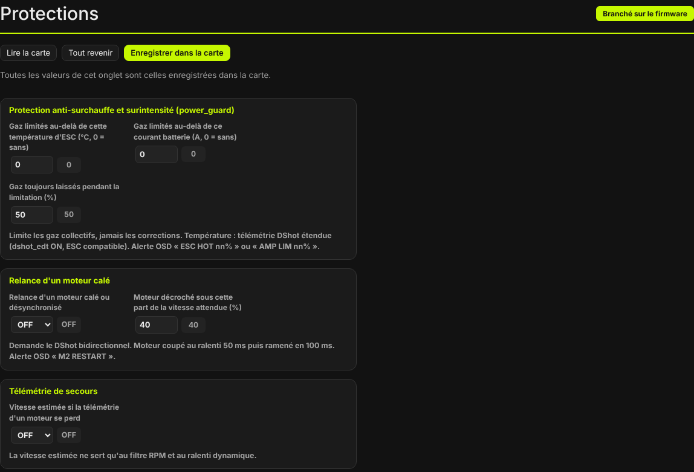
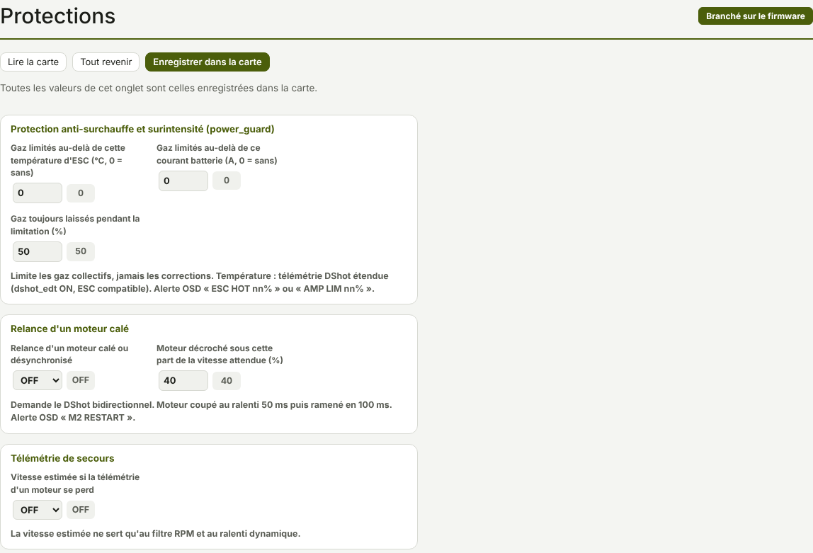

TRUEGLIDE
TRUEGLIDE Protections
L'onglet Protections regroupe trois fonctions TrueGlide : la limitation des gaz quand les ESC chauffent ou que le courant monte (power_guard), la relance d'un moteur calé et la télémétrie de secours. Toutes sont coupées par défaut.


Anti-surchauffe et surintensité (power_guard)
| Réglage | Rôle | Défaut | Plage |
|---|---|---|---|
power_guard_esc_temp | Gaz limités au-delà de cette température de l'ESC le plus chaud (°C). | 0 (sans) | 0 à 150 |
power_guard_current | Gaz limités au-delà de ce courant batterie (A). | 0 (sans) | 0 à 1000 |
power_guard_min_throttle | Gaz toujours laissés pendant la limitation (%). | 50 | 20 à 100 |
La protection limite les gaz collectifs, jamais les corrections de la régulation : le drone reste pilotable. Elle n'agit que drone armé, 100 fois par seconde.
- Température : au-dessus du seuil, la limite part des gaz du moment et baisse d'autant plus vite que
l'ESC dépasse le seuil. Elle remonte quand la température est redescendue 3 °C sous le seuil. La température
vient de la télémétrie DShot étendue :
dshot_edtsur ON (onglet Moteurs) et un ESC qui l'envoie. - Courant : au-dessus du seuil, la limite baisse d'autant plus vite que le courant dépasse le seuil. Elle remonte quand le courant est repassé sous 90 % du seuil.
La limite ne descend jamais sous power_guard_min_throttle. Pendant la limitation, les lunettes
affichent ESC HOT nn% (température) ou AMP LIM nn% (courant), où nn est la part des gaz laissée.
Relance d'un moteur calé
| Réglage | Rôle | Défaut | Plage |
|---|---|---|---|
motor_desync_recovery | Relance d'un moteur calé ou désynchronisé. | OFF | OFF / ON |
motor_desync_threshold | Moteur jugé décroché sous cette part de la vitesse attendue (%). | 40 | 10 à 80 |
La fonction demande le DShot bidirectionnel (dshot_bidir ON) : elle compare la vitesse de chaque
moteur à celle des autres. Drone armé, un moteur est jugé décroché quand :
- sa commande est d'au moins 30 % et deux autres moteurs au moins donnent leur vitesse ;
- sa vitesse est sous
motor_desync_threshold% de la vitesse attendue d'après les autres moteurs (au moins 1 500 tr/min attendus), et sous la moitié du plus lent des autres ; - cela dure 10 ms.
Le moteur est alors coupé au ralenti pendant 50 ms, puis ramené à sa commande en 100 ms. Les lunettes affichent M2 RESTART (avec le numéro du moteur) pendant 3 secondes.
Télémétrie de secours
| Réglage | Rôle | Défaut |
|---|---|---|
dshot_telemetry_fallback | Vitesse estimée si la télémétrie d'un moteur se perd. | OFF |
Quand un moteur ne donne plus sa vitesse, la carte l'estime : dernière vitesse reçue, multipliée par la variation de la vitesse des autres moteurs depuis la perte (entre 0,5 et 2 fois). La vitesse estimée ne sert qu'au filtre RPM et au ralenti dynamique. Dès que le moteur répond à nouveau, sa vraie vitesse reprend.
Autres protections, dans d'autres onglets
Ces fonctions protègent aussi le drone. Elles portent les noms et les défauts de Betaflight.
| Fonction | Ce qu'elle fait | Où la régler |
|---|---|---|
Anti-emballement au décollage runaway_takeoff_prevention (ON) | Désarme si la
régulation sature (90 % de sa limite) avec une rotation de plus de 600 °/s pendant 1 s, avant le décollage. Elle
se coupe après 500 ms de gaz au-dessus de 20 % (runaway_takeoff_deactivate_delay,
runaway_takeoff_deactivate_throttle_percent). | Configuration, cadre Armement |
Sortie de crash crash_recovery (OFF) | Après un choc (le gyroscope ne suit plus la consigne), remet le drone à plat (ON) ou désarme (DISARM). Les lunettes affichent CRASH. | Réglages de PID, profil PID |
Sortie de vrille en lacet yaw_spin_recovery (AUTO) | Sort le drone d'une vrille en lacet, au-delà
d'un seuil de rotation. En AUTO, le seuil vient du taux maximal du lacet ; en ON, c'est
yaw_spin_threshold (1 950 °/s par défaut). Les lunettes affichent VRILLE. | Configuration, Autres fonctionnalités |
Le failsafe (perte de la radio) a son onglet : Failsafe. Les alarmes de la batterie sont dans Alimentation et batterie.